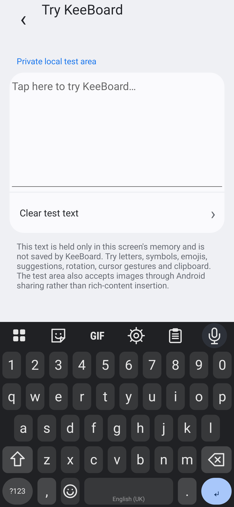
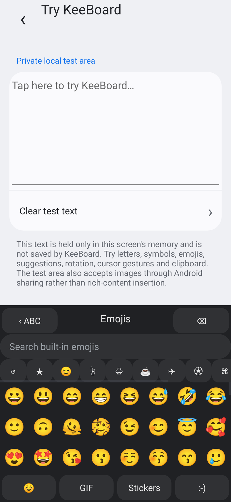
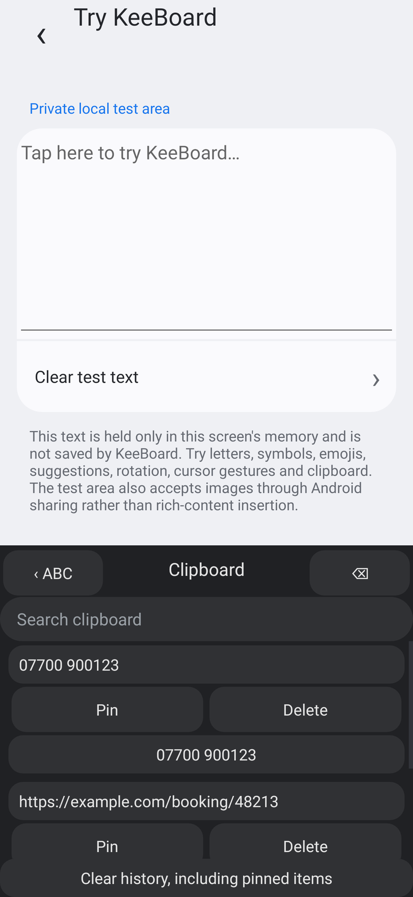
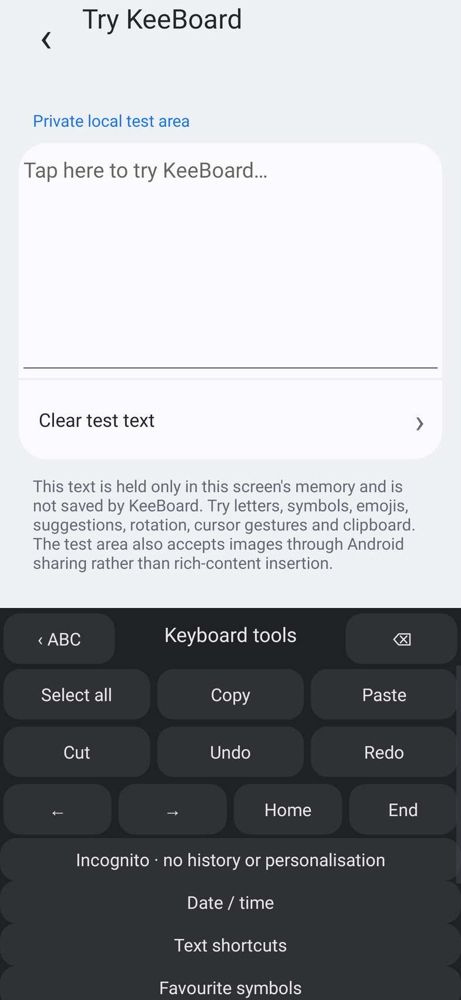
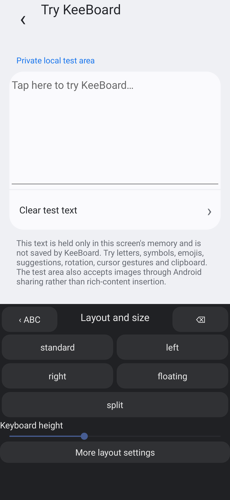
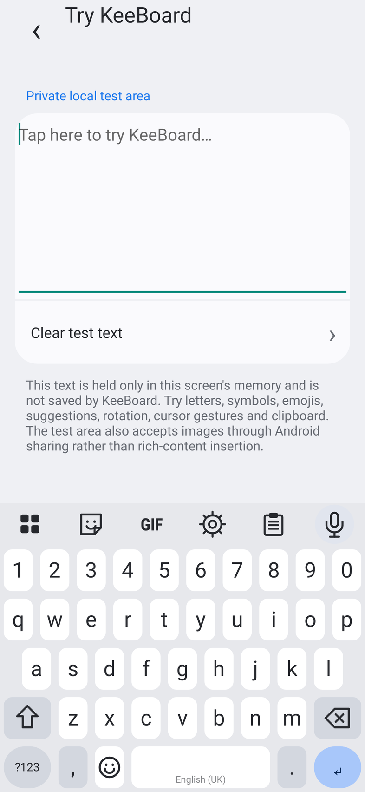
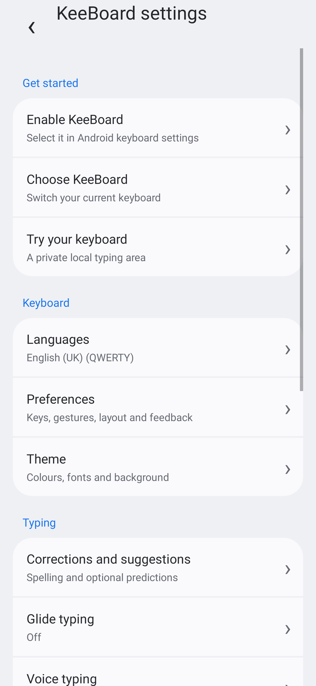
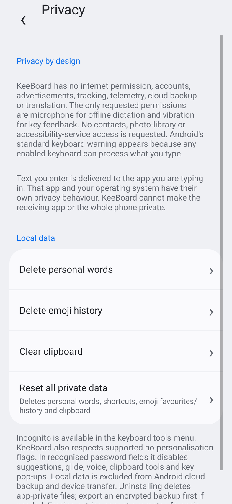

A keyboard that keeps what you type to itself.
KeeBoard is a keyboard for Android. It types in UK or US English, with word suggestions, glide typing, emojis, voice typing and a clipboard, and everything it does happens on your phone.
It has no internet permission, so it cannot send your words, your clipboard or your voice anywhere. It is free, with no adverts and no account.
Beta. This is a test build. It has been checked on an emulator, and suggestions, glide typing and voice typing still need tuning on real phones. The app you type into still receives what you type, as it would with any keyboard.
Download for AndroidHow to install
- Version 0.1.0 beta 2
- Android 10 or later
- 83 MB
- Beta
Free, with nothing to unlock. No adverts, no account with the developer, no tracking. Compare or read the release notes.
Chrome may say the file might be harmful. It shows this for app files that do not come from Google Play. Choose Download anyway.

- No internetIt has no permission to go online.
- No advertsNone in the app and none on this site.
- No accountThere is nothing to sign up to.
- Nothing learnedWords are added only when you choose.
A look inside
These are the real screens, drawn from the app's own code. The keyboard is shown over KeeBoard's own practice typing area, as it sits on a phone. Swipe or scroll sideways to see them all.







How it works
Three steps in Android's settings, then it is there whenever you type.
Install and open KeeBoard
Download the app file from this page and open it. KeeBoard shows two buttons to get it working.
Turn it on
Tap Enable KeeBoard and switch it on in Android's keyboard list, then tap Choose KeeBoard.
Make it yours
Pick UK or US English, a layout and colours, and try it in the practice area before you use it for real.
Everything is in, and all of it is free
Nothing below is held back for a paid tier, because there is no paid tier.
Typing
- UK and US English
- Over 120,000 word forms each, with completions and spelling suggestions. Auto-correction is off until you turn it on.
- Glide typing
- Slide from letter to letter. It is off at first, so turn it on if you like it.
- Gestures
- Slide on the space bar to move the cursor, swipe back to delete a word, and hold a key for accents and symbols.
- Voice typing on the phone
- English dictation worked out on the phone itself. Nothing is saved as a recording.
Extras
- 3,963 emojis
- With search, skin tones, favourites and recent ones.
- GIFs and stickers
- An offline collection of greetings, and room for your own pictures and GIFs.
- Clipboard history
- Optional, and it clears itself after an hour. Pin what you want to keep.
- Shortcuts and an editing panel
- Text shortcuts, select, cut, copy, paste, undo, and the date and time.
Your way
- One-handed, split and floating
- Move the keyboard to one side, split it for two thumbs, or float a smaller one.
- Height and size
- Separate heights for upright and sideways, and sizes for keys, letters and emojis.
- Colours and a background
- Your own colours or a picture, with themes you can save and share.
- An encrypted backup
- Your settings, words and shortcuts in one file with its own passphrase.
What you type stays on your phone
No internet permission
Android shows this in the app's permissions. KeeBoard has no way to send anything anywhere.
Two permissions only
The microphone, for voice typing when you tap it, and vibration, for key presses.
No learning in secret
KeeBoard does not learn from your messages. A word is added to your dictionary only when you add it.
Installing and updating
KeeBoard is not on Google Play, so your phone asks a couple of extra questions the first time.
Download the app file
Tap Download on your phone. The file is called KeeBoard.apk and is about 83 MB. If Chrome says the file might be harmful, choose Download anyway.
Allow the install
Open the file. The first time, Android asks you to allow your browser to install apps. Allow it, go back and tap Install. If Google Play Protect steps in, choose More details, then Install anyway.
Updating later
KeeBoard tells you when a newer version is out. Install the new file over the old one and everything you have saved is kept.
Version 0.1.0 beta 2, released 21 November 2026. See the release notes, or check your download.
Questions
Is KeeBoard free?
Yes. There is no paid version, no subscription and no adverts.
Is it on Google Play?
No. It is downloaded from this site as an Android app file. It needs Android 10 or later.
Android warned me about the keyboard. Is that normal?
Yes. Android shows the same warning for every keyboard that is not built into the phone, because any keyboard sees what you type. KeeBoard has no internet permission, so what it sees cannot leave the phone.
Android says the setting is restricted. What do I do?
For an app installed from a file, some phones hide the switch at first. Open KeeBoard's App info, tap the three dots, choose Allow restricted settings, then try again.
Does it translate?
No. Translation needs the internet, and KeeBoard does not go online.
Which languages does it type?
UK English and US English. Other languages are not in this test build.
Why is the download so big?
The voice typing engine, the English dictionaries and the emoji pictures are all inside the app, so nothing has to be fetched later.
How do I update it?
Install the new version over the one you have. Do not uninstall first, or your words, shortcuts and settings are lost. A backup file keeps them safe.
Type freely, privately
Free, with no adverts and nothing to unlock. Made by the developer of several other free Android apps: see them all.